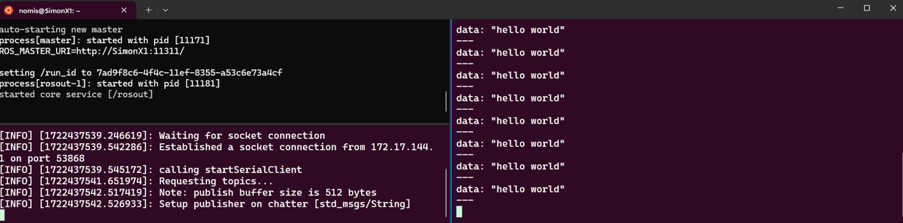

Introduction to Arduino
Human-IST, ProtoFab, LearningLab, UniFR
ProtoFab assignment 4: Introduction to Arduino - Wiring and Programming Arduino Poards
Introduction
This practical work focuses on learning the basics concepts of Arduino
In this practical work, you will perform the following tasks:
Task 1 – First experience with an Arduino board – Blink example
Task 2 – A first wiring for a LUX reader
Task 3 – Remote control a LED and display sensor value (code on your own)
Task 4 [OPTIONAL] – Connect your Arduino with ROS
[EXTRA] Example 1 [OPTIONAL] – Arduino and LedRing
[EXTRA] Example 2 [OPTIONAL] – Arduino and Servo-motor Control
Learning objectives:
At the end of the assignment, you should be able to
Know the basics of Arduino IDE
Know how to program an Arduino board (basics)
Do a simple wiring and read data from a sensor
Send commands remotely to control an actuator
[OPTIONAL] Enable communication between your Arduino and a ROS ecosystem
Pre-requisites
IDE for Arduino installed on your machine
Notions seen in the lecture LN04
Basic notions of electronics (not given in this course)
Hints
The sample codes presented in this assignment are also available on the Github of the course.
Before uploading your first sketch, ensure you have set the right settings in the IDE.
Ensure you are using the right board on the Arduino IDE (“Adafruit Feather ESP32-S3…” must be correctly selected on the top left of the interface of the Arduino IDE).
The IDE provides a Serial Monitor Console (to display it, you must click on a small icon on the top right of the interfcae of your IDE). Make sure you use this as it is the main way to debug. Any “serial.println()” command should be outputted in this terminal.
When the Serial Monitor Console is reporting “Not Connected: Select …”, try to reselect your board/COM on the top left of the interface of Arduino IDE.
After uploading a sketch, if the LED #13 on the ESP32 is blinking or pulsating, it probably indicate that the sketch did not uplod correctly and that it cannot start. Main reasons: wrong settings
To be able to upload a sketch, you need to put the board in bootloader mode. You need to hold the “boot” button down and click once on the “reset” button. Otherwise, you’ll get a timeout error when uploading. It seems this is not necessary anymore with latest updates; uploading the sketch automatically puts the card in bootloader mode.
If you are using Linux with WSL (Windows)
Install Arduino IDE on your Windows OS (WSL only provides limited access to USB ports)
Do not forget to disable your firewall when trying to communicate with external devices (i.e. ROS).
Tasks
Task 1 - First experience with an Arduino Board – Blink example
As a first task, we will ensure everything is working as expected by configuring your IDE to support the ESP32 card and then by uploading a first sketch to the ESP32-S3 board.
You can find documentation and detailed instructions on how to use the ESP32-S3 Feather board from its official_esp32_documentation. The installation steps listed below are mostly a summary of these documentation. Please refer to the previous link if something is unclear.
Let’s do the task step by step:
Ensure you have the latest ArduinoIDE installed on your machine (Note: we tested with the version 2.3.6).
In the Arduino IDE, install the libraries for the ESP32
Start Arduino IDE and open the “Preferences” window
Add the following IDE_esp32_link to the field “additional boards manager URLs (see screenshot below)
From your IDE main window, select “Board Manager” (second icon on the left pane) and search for “esp32”. Install the package named “esp32 by Expressif Systems”
Restart your IDE
In the Arduino IDE, set the ESP32 as your current development board
- In the top menu, from Tools->Board, select the “Adafruit Feather ESP32-S3 2MB PSRAM as your development board”
Remark: Now you can access many specific examples for your board. You can have a quick look from “File”-> “Examples” -> “Examples for Adafruit Feather ESP32-S3”
- In the top menu, from Tools->Board, select the “Adafruit Feather ESP32-S3 2MB PSRAM as your development board”
Connect your board to your computer using the provided USB cable
Make sure your system detects your board, set the right com port from “Tools” -> “Port” -> COMx
On the bottom right of the IDE, you should see that your card is connected
Remark: You may potentially need to set the card in bootloader mode to see it connected.
From “File”-> “Examples” -> “01. Basics” (built-in examples), load the Blink example
Note: Have a look at the code. Note that it is the same as the one presented during the lecture.From “Tools”, ensure you have the right settings defined for your card (see image below)
Note: On Windows, it took me quite some time to find the right settings for the upload operation to work successfully …
Upload the sketch onto the board
- Compile your code (click on the “verify” button on the top left of the IDE)
WARNING: Before uploading a sketch, the card always needs to be set into bootloader mode. It seems this is not necessary anymore with latest updates; uploading the sketch automatically puts the card in bootloader mode.
Hint: If you still want to put the card in bootloader mode: on the card, hold the “Boot” button and then press the “Reset” button, finally release the two buttons simultaneously. All LEDs on the card should be OFF while in bootloader mode.
Upload your sketch (click on the “upload” button on the top left of the IDE)
Note: this operation takes a bit of time. Wait for its completion. You can see the logs on the bottom of your IDE.On your card, press the “Reset” button to make the card restart and run your program
- Compile your code (click on the “verify” button on the top left of the IDE)
You should now be able to see the small LED right next to the USB connector blink as defined in your code
Remark 1: If the code fails to upload, compiles but is not correct or some settings are misconfigured, your card could end up in a Boot loop. The RGB LED will be green (when connected to USB) or red (when connected to Power) and the LED_BUILTIN will be showing a pulsing red light. In Boot loop, the card is not visible anymore from the computer and you must put it back into bootloader mode to re-upload a sketch.
Remark 2: Do not forget to open the Serial Monitor Console (click on the button an the top-right of your IDE) to be able to see information sent to the Serial Monitor, this can help debugging your programs.
A few suggestions to go further:
What happens if you power off your card and power it back ON again?
Hint: just disconnect and reconnect your USB to test …Try to change delays and/or play with the blinking patterns in the code and upload your sketch to see the effect.
Your ESP32 has an embedded RGB LED, can you make this RGB led blink and change colors?
Hint: Remember, Arduino is example based (Hint: ESP32->GPIO->?)
Task 2 - A LUX reader
As a second task, we will do some wiring on a breadboard to connect an additional sensor to the ESP32 and report the values through the serial connection. We will also use interrupts to report extreme high or low values.
You can find additional documentation about the Adafruit VEML 7700 LUX sensor from its official_documentation, provided by Adafruit adafruit_veml7700
Remark: When you have a new sensor, you should always begin by reading/looking its official documentation.
Let’s do the task step by step:
Get your breadboard and VEML 7700 LUX sensor ready
Read the documentation about the VEML 7700.
Pay attention to the veml7700_pinout and veml7700_wiring information which help you wire things correctly
Pay attention to veml7700_information related to the “gain” and “integration time”
Install the VEML 7700 library from your IDE
- From “Tools”->“Manage Libraries…”, search and install the “Adafruit VEML7700 Library”
Wire the sensor on your board. The result should look somewhat similar to the wiring shown on picture below.
From the Arduino IDE, load the example sketch “VEML7700_test”
- You can find it in “Examples”->“Adafruit VEML7700”
Read and understand the sketch
How is the sensor initialised?
How are the interrupts for Low and High thresholds defined?
How are sensor values sent to the serial?
What happens with the interrupts? How are they handled?
Upload the sketch on the board
Test and play with your system
Are the High and Low threshold triggered?
How and when are the interrupts triggered?
Find approximate values for the Low and High thresholds that allow the detection of two events
A smartphone with lamp ON starts hovering 20 cm above the sensor
A hand starts covering the sensor
Hint: You may want to add the command below in your sketch for more consistent results. Look in the documentation and browse the web to understand its effect.
veml.setPersistence(VEML7700_PERS_8); // wait 8 readings before firing
Task 3 - Webserver - Remote control a LED and display a value
As a third task, we will provide a way to remotely actuate a LED on our Arduino. We will connect the Arduino to the Wifi, make it act as a webserver and provide a simple interface to set a LED ON or OFF.
This task has been inspired from this link. Remember Arduino is example-based; you can download most of the sketch from “File”->“Examples”->“Examples for Adafruit Feather ESP32-S3”->“WiFi”->“SimpleWiFiServer”
Let’s do the task step by step:
Get the SimpleWiFiServer sketch from the ESP32-S3 examples (or see below)
Inspect and understand the initial code:
External LED connected to a PIN
Wifi network search and connection
The NetworkServer serving an HTML page to the client and handling GET commands
Now do some modifications to the code
Set the right password and SSID to connect to the provided local WiFi of the Learning Lab (Note that if you are on a different WiFi, you need to change the information below)
ssid = “ProFab”
password = “1700_UniFR.&";
Control the embedded LED (LED_BUILTIN) instead of an external LED (Pay attention, the variable must be modified in several places within the provided code)
Upload the sketch onto the board
Test your system by connecting to the webpage and remote controlling the LED
Remark: You should be able to see the IP address of your web server on the Serial Monitor of your IDE.
A few suggestions to go further:
[Recommended] Update your code to also display the LUX values (use inspiration from previous task)
Make your HTML page more fancy. Do not hesitate to use GenAI to help you with that.
You could use buttons instead of links
You could control the RGB LED instead of the built-in LED
You could try to develop a real-time version that relies on AJAX
You could easily set your Arduino to act as an Access Point, thus removing the need of the additional router to make the system work (check this link for more details)
- Reflect on the difference and potential advantages and disadvantages of Access Point vs Router for concrete applications in real-life
/*
WiFi Web Server LED Blink
A simple web server that lets you blink an LED via the web.
//This sketch will print the IP address of your WiFi (once connected)
//to the Serial monitor. From there, you can open that address in a web browser
//to turn on and off the LED on pin 5.
If the IP address of your shield is yourAddress:
http://yourAddress/H turns the LED on
http://yourAddress/L turns it off
This example is written for a network using WPA2 encryption. For insecure
WEP or WPA, change the Wifi.begin() call and use Wifi.setMinSecurity() accordingly.
Circuit:
* ESP32 Espressif with embedded wifi shield
created for arduino 25 Nov 2012
by Tom Igoe
ported for sparkfun esp32
31.01.2017 by Jan Hendrik Berlin
*/
#include <WiFi.h>
const char *ssid = "ssid";
const char *password = "password";
NetworkServer server(80);
void setup() {
Serial.begin(115200);
pinMode(5, OUTPUT); // set the LED pin mode
delay(10);
// We start by connecting to a WiFi network
Serial.println();
Serial.println();
Serial.print("Connecting to ");
Serial.println(ssid);
WiFi.begin(ssid, password);
while (WiFi.status() != WL_CONNECTED) {
delay(500);
Serial.print(".");
}
Serial.println("");
Serial.println("WiFi connected.");
Serial.println("IP address: ");
Serial.println(WiFi.localIP());
server.begin();
}
void loop() {
NetworkClient client = server.accept(); // listen for incoming clients
if (client) { // if you get a client,
Serial.println("New Client."); // print a message out the serial port
String currentLine = ""; // make a String to hold incoming data from the client
while (client.connected()) { // loop while the client's connected
if (client.available()) { // if there's bytes to read from the client,
char c = client.read(); // read a byte, then
Serial.write(c); // print it out the serial monitor
if (c == '\n') { // if the byte is a newline character
// if the current line is blank, you got two newline characters in a row.
// that's the end of the client HTTP request, so send a response:
if (currentLine.length() == 0) {
// HTTP headers always start with a response code (e.g. HTTP/1.1 200 OK)
// and a content-type so the client knows what's coming, then a blank line:
client.println("HTTP/1.1 200 OK");
client.println("Content-type:text/html");
client.println();
// the content of the HTTP response follows the header:
client.print("Click <a href=\"/H\">here</a> to turn the LED ON.<br>");
client.print("Click <a href=\"/L\">here</a> to turn the LED OFF.<br>");
// The HTTP response ends with another blank line:
client.println();
// break out of the while loop:
break;
} else { // if you got a newline, then clear currentLine:
currentLine = "";
}
} else if (c != '\r') { // if you got anything else but a carriage return character,
currentLine += c; // add it to the end of the currentLine
}
// Check to see if the client request was "GET /H" or "GET /L":
if (currentLine.endsWith("GET /H")) {
Serial.println("--> Turn the LED ON");
digitalWrite(LED_BUILTIN, HIGH); // GET /H turns the LED on
}
if (currentLine.endsWith("GET /L")) {
Serial.println("--> Turn the LED OFF");
digitalWrite(LED_BUILTIN, LOW); // GET /L turns the LED off
}
}
}
// close the connection:
client.stop();
Serial.println("Client Disconnected.");
}
}
[OPTIONAL] Task 4 - Connect your Arduino with ROS
In this fourth task, we will turn our Arduino into a ROS Node to show how to enable a direct communication between an Arduino and ROS. As a first step, we will simply send a String over WiFi.
We recommend to continue further the exercise and modify the code to send the LUX value (and not a string) to a ROS Node.
Remark: For Windows users, who have not set network mirroring, it will be slightly trickier as you will need to enable forwarding the packet received on Windows to WSL. But a few commands can do the trick!
Let’s do this step by step.
Let’s start with the Arduino part:
Install the “Rosserial Arduino Library” from your Arduino IDE
Load the “TcpHelloWorld” example from “File”->“Examples”->“Rosserial Arduino Library”
Modify the code to connect to the WiFi instead of Ethernet
Note: you can reuse some of the code from the previous task
Pay attention to the IP address of the ROS master server (needs to be adapted later)
Use your own name for the topic
Your code should look something like the one provided below Remark: the ssid, password and IPAddress server should be adapted to your own particular case.
#define ROSSERIAL_ARDUINO_TCP // Very important directive !
#include "WiFi.h"
#include <ros.h>
#include <std_msgs/Int16.h>
#include <std_msgs/String.h>
const char *ssid = "ssid";
const char *password = "password";
IPAddress server(192, 168, 1, 3); // ip of your ROS machine (for Windows, if you use port forwarding, it is the IP of Windows and you need to have port forwarding to redirect packets to your WSL linux)
ros::NodeHandle nh; // the node
std_msgs::String str_msg; // the type of message that will be sent
ros::Publisher pub("chatter", &str_msg); // the topic on which to publish the data (parameters: name, type of message)
void setup()
{
Serial.begin(115200);
Serial.println();
Serial.print("Connecting to ");
Serial.println(ssid);
// Connect to WiFi
WiFi.begin(ssid, password);
while (WiFi.status() != WL_CONNECTED) // -> wifi delay -> a must -> other wise it will restart continuously
{ delay(500);
Serial.print(".");
}
Serial.println("WiFi connected - IP address: ");
Serial.println(WiFi.localIP());
// Setup connection to ROS machine (server)
nh.getHardware()->setConnection(server,11411);
nh.initNode();
nh.advertise(pub); // the topic must be advertised to the master
}
void loop(){
//Send a HelloWorld message every second
std_msgs::String str;
str.data = "hello world";
Serial.println("Sending message");
pub.publish( &str );
nh.spinOnce(); // Required, otherwise topic not detected by ROS !
delay(1000);
}Now let’s continue with the ROS part on your computer
Start your Linux distribution
From your Linux terminal, install the ros-noetic-rosserial package
$ sudo apt-get install ros-noetic-rosserialFor Windows users who have not enabled Network Mirroring: Enable port forwarding from Windows to WLS2 Linux
Open a Powershell from Windows (as admin)
Type the following command: Note: you must replace the “connectaddress” IP with the IP address of your WSL2 Linux, use the command “hostname -I” from your Linux terminal to obtain it.
netsh interface portproxy add v4tov4 listenport=8080 listenaddress=0.0.0.0 connectport=8080 connectaddress=172.17.152.3For all Windows users Disable your Firewall(s). Do not forget to re-enable it after the laboratory !
Finally, let’s start everything
Start the different ROS processes in distinct terminals. You can see an example in the two figures below (Figure 1 and Figure 2)
- Start roscore
$ roscore- Start the node that will handle TCP connections (with the default port [11411]). You can change the port, if necessary, but then also modify the port in the sketch
$ rosrun rosserial_python serial_node.py tcp 11411- Echo the received messages in the console (just for debugging, in practice you would create a node that consumes the content of the topic)
$ rostopic echo NameOfTheTopicUpload your sketch to the Arduino
Remark: you need to have the right IPAddress for your server in the code!Restart your Arduino
Note: The Arduino should start, connect to the WiFi, advertise its node and finally start sending data periodically. On your Linux, running ROS, the result should look similar to the content shown in Figure 2, with the data being displayed on the terminal every second.

A few suggestions to go further:
[Recommendend] Modify the code to send the Lux values from your VEML sensor (instead of a string)
Use the tool “rqt” to visualize the values received on the topic
Create a bi-directional communication between Arduino and ROS
- Arduino VEML LUX Sensor -> ROS node on your computer -> Arduino LED
- For example, you could create a sketch that controls the LED on the Arduino based on values received on a specific topic. A node running on your computer could send data to this topic.
- If you work with other groups, you could easily control LEDs on multiple Arduinos, all listening to the same topic ...Extra Examples
[EXTRA] Example 1 - Arduino and LedRing
This example is more a support to help you bootstrap your project by giving you an example of build and sketch to control a ring of leds. If you want to try it, do not hesistate to ask us for the necessary hardware to build this example.
#include <Adafruit_NeoPixel.h>
#define LED_PIN 6 // which PIN of the arduino board is used to send 'commands' to the ring
#define LED_COUNT 24 // the numbe rof led on the ring
Adafruit_NeoPixel ring(LED_COUNT, LED_PIN, NEO_GRB + NEO_KHZ800);
void setup() {
ring.begin();
ring.show();
ring.setBrightness(50);
}
/*
* Example to make the led ring alterate Red, Green, Yellow colors and shift the position of these colors by 1 every 500 ms
* It gives the impression that the RGY colors move along the ring.
*/
int k = 0;
void loop() {
for (int i = 0; i < LED_COUNT; i++) {
if((i+k)%3 == 0){
ring.setPixelColor(i, ring.Color(255, 255, 0));//Yellow
}else if((i+k)%2==0){
ring.setPixelColor(i, ring.Color(255, 0, 0)); //Red
}else{
ring.setPixelColor(i, ring.Color(0, 255, 0)); //Green
}
delay(5);
}
ring.show()
delay(500);
k++;
}[EXTRA] Example 2 - Arduino and servo-motor control
This example is more a support to help you bootstrap your project by giving you an example of build and sketch to control a servo-motor. In this example, we use a RovoR S009 Analog Servo-motor. You can find the exact model (here)[https://www.robbe.com/en/RC-Electronics/RC-Systems/Servos/Robbe-Modellsport-ROVOR-SERVO-S0009-9G/S0009]. If you want to try it, do not hesistate to ask us for the necessary hardware to build and test this example.
/*********
Rui Santos & Sara Santos - Random Nerd Tutorials
Simplified from Complete project details at https://RandomNerdTutorials.com/esp32-servo-motor-web-server-arduino-ide/
Based on the ESP32Servo Sweep Example
*********/
#include <ESP32Servo.h>
static const int servoPin = 6;
Servo servo1;
void setup() {
Serial.begin(115200);
servo1.attach(servoPin);
}
void loop() {
for(int posDegrees = 0; posDegrees <= 180; posDegrees++) {
servo1.write(posDegrees);
Serial.println(posDegrees);
delay(20);
}
for(int posDegrees = 180; posDegrees >= 0; posDegrees--) {
servo1.write(posDegrees);
Serial.println(posDegrees);
delay(20);
}
}References
- [esp32_webserver_tutorial] https://randomnerdtutorials.com/esp32-web-server-arduino-ide/
- [official_esp32_documentation] https://docs.espressif.com/projects/arduino-esp32/en/latest/index.html
- [Arduino_IDE] https://www.arduino.cc/en/software
- [IDE_esp32_link] https://espressif.github.io/arduino-esp32/package_esp32_index.json
- [bootloader] https://docs.arduino.cc/retired/hacking/software/Bootloader/
- [adafruit_veml7700] https://learn.adafruit.com/adafruit-veml7700
- [veml7700_pinout] https://learn.adafruit.com/adafruit-veml7700/pinouts
- [veml7700_wiring] https://learn.adafruit.com/adafruit-veml7700/arduino
- [veml7700_information] https://learn.adafruit.com/adafruit-veml7700/adjusting-for-different-light-levels
- [esp32-ap-webserver] https://randomnerdtutorials.com/esp32-access-point-ap-web-server/